Complex KDA：让一次低秩递归更新具备旋转能力
Julien Siems、Riccardo Grazzi、Korbinian Pöppel 为共同第一作者；首位作者来自弗莱堡大学，合作单位包括 Microsoft Research、图宾根大学、MPI-IS、ELLIS Institute Tübingen、EPFL、OpenEuroLLM、JSC、LAION、Open-Ψ 与 PriorLabs。论文 Complex KDA: Understanding and Enhancing the Expressivity of Kimi Delta Attention 于 2026 年 9 月 21 日提交，本笔记于 9 月 23 日核验原文。唯一论文入口为 arXiv:2609.24797。官方代码及模型集合均可访问，未在本次调研中运行训练复现。
基于 delta-rule 的线性递归网络虽能高效处理序列，但单次低秩修正限制了状态转移的表达能力。已有方法通过每个 token 连续执行两次 delta 更新获得二维旋转，却增加了更新成本；这篇论文追问，KDA 已有的逐通道门能否提供第二次反射，在保留对角加秩一结构时实现同样的关键能力。
1. 背景和问题
1.1 为什么线性递归需要关心旋转
语言模型的长序列计算不仅是把更多 token 塞进窗口。标准注意力在解码时需要保留随历史增长的键值缓存，线性递归则把过去压缩到固定大小的状态中，每来一个输入就更新一次。状态大小不随序列长度增长，给流式服务、长时间运行的智能体以及需要持续读取行为序列的模型带来吸引力。然而，压缩结构决定了什么历史关系可以被持续保存。若状态更新只能逐通道衰减，模型很容易记录某种输入的加权累计，却不一定能稳定记住多步操作按照不同顺序组合后的结果。后者不是多加一个记忆槽就自然解决的问题，还取决于状态转移矩阵能够表示什么变换。
作者采用状态追踪作为分析抓手。最简单的例子是奇偶性：每遇到一个指定输入，状态翻转一次，两次翻转回到起点。更复杂的是模计数：例如状态需要在三个位置间循环，一次操作前进一步，三次后回到起点。再复杂一些则是置换组合，交换对象一和二后再交换二和三，与相反顺序的结果不同。这样的任务要求网络持续执行输入相关、顺序敏感的运算。它们把记忆能力中的几何问题暴露出来：沿一条轴反复改变符号能实现奇偶性，而在平面内持续转动则能提供多于两个状态的周期编码。只靠不断缩小幅度保存信息，长序列下会面临可分辨性下降。
这里的“复数”首先指实矩阵可以具有一对共轭复特征值，并不要求把模型参数和整个训练栈改成复数张量。二维实旋转就有这种谱结构。角度表示周期进度，特征值模长表示每次推进后幅度是否保留。如果模长小于一，状态会旋转同时衰减；模长等于一，理想精确运算下可以永久保持相位。这个区别解释了为什么谱分析适合研究长度外推：短训练序列中看不出的微小衰减，在几百次迭代后可能变成明显错误。但反过来，拥有单位圆上的特征值，也不自动意味着有限精度训练能学到可靠的状态表示，或遇到扰动后能纠错。
1.2 从 DeltaNet 到 KDA，哪里仍然受限
DeltaNet 用一个单位 key 方向上的秩一修正更新旧状态。更新系数为零时不变，为一时相当于移除该方向的分量，为二时成为 Householder 反射。反射是一个保持长度的变换，却只有实特征值：被反射方向改变符号，垂直方向保持不动。Gated DeltaNet 在这个更新前再加标量遗忘门，对所有状态通道施加相同缩放。标量与所有矩阵可交换，所以即使允许标量变负，也只是整体改变缩放和符号，不能形成一个独立朝向的第二次反射。这是它与本文逐通道门的根本差异。
Kimi Delta Attention 把标量门升级为逐通道对角门，各坐标可以独立遗忘。这个自由度使反射与门不再必然可交换，状态更新矩阵也可以不对称。但不对称不等于出现复特征值：只要对角门非负，矩阵仍能通过相似变换联系到一个对称矩阵，因此谱依然是实的。论文特别区分这两个命题，避免把“通道交互更丰富”直接等同于“能够旋转”。标准 KDA 比标量门灵活，却还没有跨过本文需要的谱结构门槛。
另一条已有路线是 DeltaProduct：每个 token 先后执行若干次 delta-rule 更新。两次完整 Householder 反射的复合可以实现二维旋转，因此 DeltaProduct₂ 已经具备相关状态追踪能力。问题是这引入第二个自由方向和额外递归更新。本文并不否认这条路线，反而把它当作能力参照：如果 KDA 的对角门允许负值，一条坐标轴的符号翻转本身就是反射，原本已有的逐通道乘法便能承担其中一次变换。于是需要改变的是门的取值范围，而不是每个 token 的低秩更新次数。
1.3 论文到底证明什么、又没有证明什么
文章的主线包含三个相互连接而不能混为一谈的层次。首先是矩阵结构：允许门落在负一到一、更新系数落在零到二后，单个 KDA 转移能表示哪些正交变换。其次是计算表达力：把这些转移接在一起，配合足够强的解码器，能够追踪哪些有限群或自动机。最后才是优化与应用：用普通训练是否能学到这些能力，以及作为语言模型的 token mixer 是否有可观测收益。结构定理提供“存在某套参数”的证明，训练实验提供“这一配方找到了有用参数”的证据，下游平均分则测量更混合的能力，三者不能相互替代。
状态追踪的输入设定同样重要。本文允许输入覆盖一个群的所有元素，而不是只给恒等操作和两两交换。如果只使用某个特殊生成元集合，某些基线会更容易表达，理论比较就发生变化。论文还区分直接实现与追踪：直接实现要求隐藏转移构成忠实矩阵表示；追踪只要求固定解码器能从隐藏状态恢复目标状态，可以有多个不同隐藏状态对应同一个群元素。后者更宽松，使四维构造能够处理三维直接表示做不到的 A₅。读者若把两种定义看成同义词，就会误读理论贡献。
对于推荐与搜索，这篇论文的直接贡献仍在通用序列架构，而不是推荐指标。行为序列可能同时含重复周期、状态切换、顺序依赖，研究一个固定状态模型如何持续保存这些关系具有启发性。但论文没有训练点击率模型，没有报告用户级 AUC，也没有验证线上转化率。因此可以借用其“保留相位”和“区分操作顺序”的机制假设，不能把合成置换任务上的外推幅度换算为用户建模收益。更合理的问题是：真实行为中的周期信号是否足够稳定，训练是否会把有符号门用于任务相关状态，以及压缩状态能否保留稀疏而重要的历史事件。
另一个需要提前记住的边界是，线性仿射递归缺少某些非线性网络拥有的纠错动力学。即使理论转移不扩大向量范数，浮点误差、参数偏差和输入扰动仍可能在长时间积累，状态落在决策边界附近后就会解码错误。作者没有宣称克服全部这种问题；实际 S₄ 外推仍下降，A₅ 在普通随机初始化下未学成。本文值得精读，是因为它既给出了廉价增加几何自由度的方式，也明确保留了这些失败面，而不是仅用较好的语言模型均分包装一个新的门函数。
2. 方法
2.1 从对称谱到两次反射
单个递归头以输入决定的仿射更新作用于状态矩阵，每一列共享同一个转移。本文延续 KDA 的读写结构，主要改变转移可取的参数范围。训练仍由对应任务的损失反向传播，推理时每个 token 使用当前投影产生的门和 key 执行递归，不增加第二套隐状态。
符号解释：$x_t$ 是当前输入，$H_t\in\mathbb R^{n\times d_v}$ 是第 $t$ 步状态，$A_t$ 是作用在状态列上的转移矩阵，$B_t$ 是输入相关写入项，$\operatorname{dec}$ 是读出函数。这个表达把历史混合与新信息写入分开；本文表达能力主要受 $A_t$ 的结构限制，不能仅靠更强的读出器抹掉全部限制。
符号解释：$I$ 是单位矩阵，$k_t$ 是归一化 key，$\beta_t$ 控制沿 key 的修正程度，$\alpha_t$ 是逐坐标门。同时扩展门的符号范围和系数的反射范围才是 CKDA 的关键，单独修改一个范围不足以得到本文研究的旋转谱。
符号解释：矩阵二范数给出最大长度放大率。单位 key 下，前一个因子沿 key 的特征值为 $1-\beta_t$，其余方向为一；后一个因子的最大绝对门值不超过一。因此范围扩展仍保持转移非扩张。这个保证针对齐次转移，不表示包含持续写入项的整个隐藏状态总是有统一上界，更不表示数值误差会自动回到正确轨道。
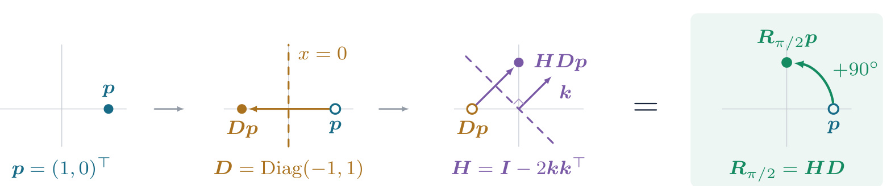
Figure 1 从左到右展示一个具体向量如何经历更新，最左侧的点在横轴正方向。对角门把横坐标乘以负一、纵坐标乘以正一，于是它先跨过纵轴到达对称位置。这一步不需要额外的低秩乘法，恰好就是原有逐通道门在允许负值后能够做的事。接着，单位 key 确定第二条反射轴，Householder 更新把中间向量映射到上方。最右侧把两步合并后直接画成九十度旋转，向量长度保持不变，方向则发生非平凡变化。图里的虚线、空心中间点和实心终点有明确时间顺序，不能把它理解成两个不同模型的并行输出。
这张图解释了为何必须同时解开两个范围约束：若门仍只能为正，它只能压缩横坐标，不能提供第一条反射；若更新系数最多到一，第二步只能向某个子空间投影，不能成为完整反射。只有两步都允许符号变化，复合才可以稳定地绕圈而不不断丢失长度。它也解释了作者为何强调对角加秩一结构：自由方向仍只有 key 所定义的一条，另一条反射轴由坐标门提供，因而没有引入 DeltaProduct₂ 的第二个任意 key。代价是这种额外自由度受到坐标结构约束，不等于任意高维旋转都能一次表示。 图示选择九十度是为了直观；改变 key 朝向可以连续改变旋转角度。这个构造发生在一个二维子空间，模型仍然使用实数运算，图中没有复数参数层，也没有新增位置编码。这一点对实现尤其关键：谱可以变复，存储和矩阵乘法却仍然保持实数。对于读者而言，最值得保留的直觉是“门不只是遗忘强度，它还可以改变坐标方向”。但将这个几何可能性转化成可训练机制还需要初始化、key 的角度分布和数值实现共同配合，后续实验专门检验了这些因素。
符号解释：这里固定 $\beta=2$，门为 $\operatorname{Diag}(\alpha,1)$，$\theta$ 决定反射法向量。展开式明确显示两个非对角项不再对称；当 $\alpha=-1$，矩阵成为角度 $2\theta$ 的标准旋转。
符号解释：$\Delta$ 是二阶特征多项式判别式，负值表示一对非实共轭特征值，$\lambda$ 是其中任意一个。模长结论只在这对特征值确实非实时成立。非负门使判别式不可能为负；负门打开可能性，但还需要合适角度。接近负一时模长趋近一，旋转得以持久。
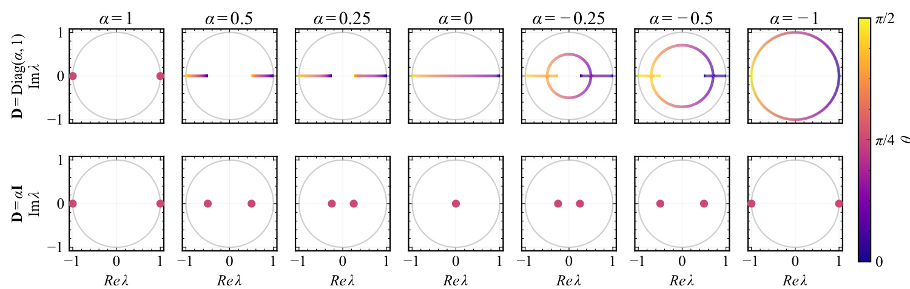
Figure 2 的两行必须配合阅读。横纵轴分别是特征值实部与虚部，每列改变门值，颜色则对应 key 的角度。上行使用逐通道门，其中一个通道变化、另一个保持为一；从正门经过零再进入负门后，谱轨迹由实轴上的点或线段发展成离开实轴的共轭形状，并在负一处落到单位圆。下行使用相同数值的标量门，所有通道同时缩放，无论它变正还是变负，谱始终落在实轴上。灰色圆提供单位模长参照，因此这并非二维状态的运动轨迹图，而是不同参数下转移矩阵的特征值分布。
图中比较排除了一个常见误解：把“允许负门”单独当作任何门控递归模型都能旋转的充分条件。标量门即使为负，也只改变整体方向，无法制造独立的坐标反射。另一方面，上行负门的谱模长小于一时，确实能产生振荡，却会逐渐衰减，所以看到复特征值也不能立即声称实现无损长期记忆。谱的角度和模长承担不同功能；前者决定相位推进，后者决定持久程度。论文的理论构造使用边界值，训练网络通常只能靠近边界，因而外推误差仍可能随长度累积。 从证据性质看，这张图支持的是解析公式对应的参数空间结构，没有使用训练数据，也不报告下游准确率。它适合解释机制，却不能证明某种初始化一定能找到单位圆上的角度。后文 S₃ 模型学得的谱可以与这里对照，形成“构造存在—训练得到相似结构—任务外推改善”的链条；三段缺一不可。将门推广到多个坐标时，作者继续分离幅值和符号，说明符号部分最多提供一个有效旋转平面。这个限制提醒我们，不应把上行圆形轨迹理解为一个头能够独立编码任意多个频率和任意高阶置换。
2.2 正交 DPR1 与状态追踪边界
CKDA 覆盖所有正交的“对角加秩一”矩阵，而不只是给出一个二维旋转例子。作者把对角门拆成各坐标上的广义 Householder 因子，由此连接原有低秩结构与完整几何描述。此处是表达能力分析，不是训练时逐个执行的额外循环。
符号解释：$e_i$ 是第 $i$ 个标准坐标向量，各因子作用在不同坐标所以可交换。当 $\alpha_i=-1$，该因子是精确坐标反射；当幅值较小，它还包含收缩。CKDA 因而可以被理解为一次自由朝向修正结合若干轴对齐变换，而不是多个完全自由的反射。
符号解释：$D$ 是对角矩阵，$u,v$ 是一般秩一修正中的两个向量，$S$ 是符号矩阵，$k$ 为单位向量。定理表明，若一般 DPR1 转移要求正交，即使允许非对称的 $uv^\top$，也没有超出 CKDA 的正交族。它没有说 CKDA 覆盖全部非正交 DPR1 矩阵，更没有说单个转移覆盖所有正交矩阵。
符号解释：$S$ 保存各通道正负号，$|\alpha|$ 保存幅值，$\widetilde A$ 是去掉幅值收缩后的变换。把 key 分解到正号与负号坐标子空间后，非平凡旋转仅发生在这两个分量张成的平面内；需要 key 同时覆盖两类坐标且 $\beta>1$。完整 CKDA 转移也最多具有一对非实共轭特征值，这是能力与限制同时成立的结论。
这种结构足以在一层追踪所有同构于 SO(3) 有限子群的群。循环群与二面体群使用二维构造，A₄、S₄ 使用三维实现，A₅ 则通过四维隐藏结构与多对一读出追踪。它们依赖精确数据类型及足够表达力的解码器，不能当作有限 BF16 模型无穷长鲁棒性的保证。对 S₅，若每个头的转移非扩张、单位圆上最多一对非实共轭特征值，且每头只能到达有限多个隐藏状态，那么一层即便有有限多个独立头仍然不够。去掉其中任何假设都需要重新论证，不能省略“有限可达”后把它写成绝对不可能。 多层构造沿用时钟、缓冲器、累加器链条：时钟调度周期，缓冲器分解目标转移，累加器逐步应用因子，读出校正延迟。CKDA 把时钟从两层压到一层，所以三层可解决任意有限群词问题，相比已有 DeltaNet/GDN 构造少一层；这不是证明所有 GDN 解法最低必须四层。若还要用三层模拟一般正则语言或有理权加权自动机，则需要允许 $\beta>2$，并采用论文规定的精确算术与多项式精度。这时不能再沿用前面的非扩张保证。
2.3 有符号门的训练与高效执行
理论范围可以简单描述，但现有 KDA 内核把门存为对数衰减，不能直接对负数取对数。附录给出真实训练参数化，幅值保留下界，符号单独处理。这里将理论中零门的极限与实际实现区分开，避免误以为只把 sigmoid 乘二减一即可无缝复现论文。
符号解释：$a,b$ 为门与更新率的预激活，$\sigma$ 是 sigmoid，$\epsilon$ 是幅值下界，$s$ 是符号。计算 $\log|\alpha|$ 时使用 FP32。零点存在符号跳变，反向传播对符号分支停止梯度，并采用绝对值在零处的零次梯度约定。初始化可以保持门为正，也可以让约一半通道从负值开始；不同任务的最优选择并不一致。
符号解释：$S_i$ 是第 $i$ 步对角符号矩阵，$P_t$ 累积所有符号翻转，带波浪号的量是变换坐标中的状态、key 与 query，$o_t$ 为输出。由于 $P_t$ 自身正交且等于其逆，符号可以吸收到 key/query，使剩余递归继续使用非负幅值门，读出仍完全等价。这是重用高效 KDA 内核的原因。作者提供编译 PyTorch 的 gauge 版本、融合归一化与反向传播的 Triton 版本，以及结合 TileLang 反向核的混合版本；它们实现同一数学变换，但实际吞吐并不相同。 训练还有一个容易被忽略的角度因素。继承自 DeltaNet 的 SiLU 会限制 key 投影的负侧范围，经归一化后可能偏向某些角度。状态追踪实验因此去掉 key/query 的 SiLU，语言模型则单独消融，而不是把删除激活当成普遍有效规则。这个实现细节与前面的几何分析一致：能否形成相反符号坐标之间的 key 分量，不仅由门决定，也与 key 的分布有关。推理时仍需维护累计符号及相应坐标约定，否则训练和递归执行可能不等价；这属于复现时应优先检查的结构一致性。
3. 实验结果
3.1 群词外推：机制有效，但 A₅ 仍有优化障碍
标准状态追踪模型只有一层，使用十二个头、每头十六维，训练六万步，批量大小为 1024，Muon 学习率为 0.005。长度课程依次为 4、6、8、16、32，超过三十二的测试长度才是外推。作者展示三次种子中最好的一次，纵轴把随机猜测映射为零、全对映射为一，因此应称为缩放准确率，不能直接当作通常的百分比准确率。
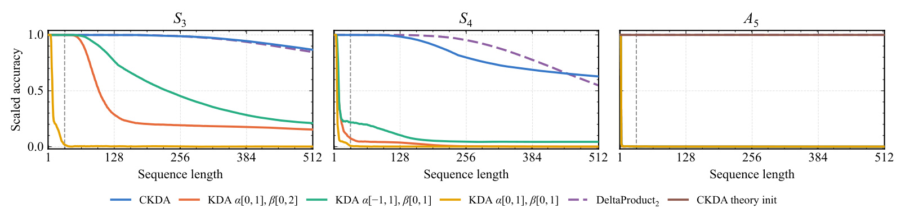
Figure 6 的横轴延伸到五百一十二，每个面板对应不同群词任务，训练最大长度远在左侧。S₃ 面板中，只打开更新率范围或者只打开负门的曲线都在长序列明显下滑，标准范围很快接近随机水平；同时打开两者的 CKDA 与 DeltaProduct₂ 则保持较高准确率。作者解释单范围版本长序列约零点二的缩放准确率，主要对应识别两个 A₃ 陪集，也就是只学到奇偶性一类的较粗状态，而没有完整追踪全部群元素。这比简单说“基线记不住”更有信息量，因为失败保留了部分代数结构。
S₄ 面板提供了更严格的边界。蓝色 CKDA 明显优于只打开一种范围的模型，但随着长度增加依然下降，不能描述成完美泛化到任意长序列。DeltaProduct₂ 在若干长度也有优势，说明本文不是全面击败双更新架构，而是在不同计算结构下达到类似的表达能力。图中的排名是特定头数、训练课程、优化器和种子选择规则下的观测；报告最佳种子有助于展示“可学到”，却不足以反映训练成功率、方差和稳定性。实际复现应保留全部种子，并额外检查低精度是否加快误差积累。
最右侧 A₅ 面板不能与前两个直接作同条件比较。普通随机训练未学会 A₅，成功曲线来自靠近理论四元数构造的可训练初始化；该模型还改成四个四维头、隐藏维度三十二，只训练三千步，课程也不同。其两头用理论 key 和接近反射端点的系数初始化，所有参数随后仍可学习，监督仍是普通下一状态交叉熵。这个结果证明理论构造可以成为可训练解的附近区域，但不能把收益全部归因于初始化，因为架构和训练安排也变了。论文明确承认这个混杂，是理解整篇文章“表达存在不代表优化可达”的关键证据。
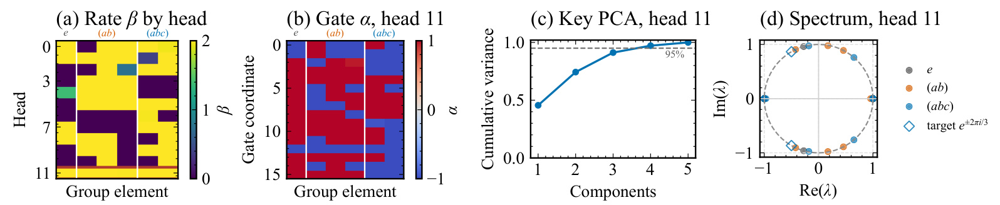
Figure 7 把任务曲线进一步连接到学得的内部结构。左侧热图按 head 和群元素显示更新率，可以看到被重点研究的第十一个头接近系数二，也就是反射端点。第二张热图只看这个头的通道门，各坐标接近正一或负一，符合先前两次反射构造对符号门的要求。第三张图对 key 做主成分分析，前三个主成分累计解释约百分之九十五的方差，说明实际学到的方向并没有均匀铺满全部十六维。最右侧谱图显示单位圆附近的共轭复特征值，并画出三循环所对应的理论目标位置。
四个子图共同支持作者提出的机制，而不是仅证明网络容量更大。更新率接近反射、门接近符号值、key 有低维结构、谱接近周期目标，这些现象彼此对得上，因而将 S₃ 的外推改善解释为旋转状态的形成是有依据的。但需要注意观察对象的选择：这是一个成功模型的特定头，不代表所有头都收敛到相同结构，也不代表每一次训练都达到这个解。主成分累计方差衡量的是 key 的分布维度，不等于网络只用了三个有效状态，更不能由此推出压缩掉其余通道完全无损。
右图中的点也并非所有都严格落在理想目标上。有限训练的参数逼近与解码器适应可能共同完成任务，理论精确表示只是参照。只看某些复特征值出现，仍无法排除模型使用其他辅助信号；如果要进一步确定因果机制，需要把负门屏蔽、限制更新率、干预某个头后重新评估外推，而不是仅统计特征值。本文目前提供的是结构高度一致的机制证据，这已经比单一准确率更强，但仍未完成对每个通道作用的完整解释。这也给后续复现一个清晰目标：先复现谱与门分布，再检验这些分布变化是否真正导致长序列性能变化。
3.2 周期音频：无反馈条件下保持相位
音频实验使用固定两小节、每分钟一百二十四拍的合成节奏，分成三十二帧，每帧六十四个波形值。样本仅改变循环相位，前八帧提供提示，之后输入全零。模型一次前向产生延续，没有把预测反馈为新输入，因此尽量隔离了递归本身的相位保持能力。所有模型只有一个序列混合层；CKDA 约十八点二万参数，GRU 约二十点六万，Transformer 约二十点七万。
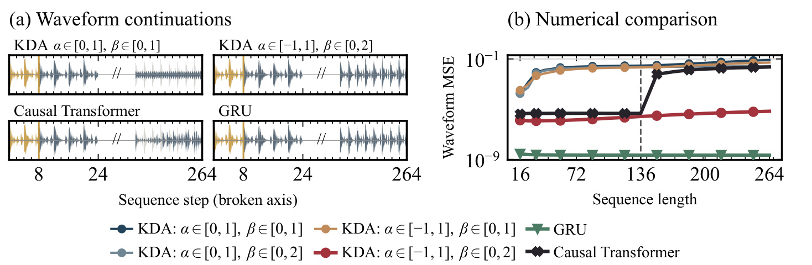
Figure 8 左侧将提示后不久与远超训练长度的波形并排显示，中间断轴省略大段时间。金色部分是提示，灰色是目标，蓝色是预测，因此读图要观察预测是否持续与目标保持相位对齐，不能只看是否生成了周期状波形。标准 KDA 和因果 Transformer 在后段出现明显偏差，完整范围 CKDA 保持较好对齐，而非线性 GRU 最准确。右侧纵轴为波形均方误差的对数尺度，横轴为测试长度，虚线标记训练上限一百三十六。CKDA 的红线在训练范围外保持较低误差，标准范围和单范围扩展则高得多。
在长度二百六十四时，作者报告 CKDA 信噪比为 38.1 dB，因果 Transformer 为 2.8 dB。这些数值对应对所有三十二个提示相位、延续步与波形坐标平均的误差，且在撤销归一化后计算。模型训练两千五百次更新，只使用种子零，长度课程从十二逐步增加到一百三十六。信噪比本质上比较目标能量与误差能量，不能与语音主观音质分数或语言任务准确率混用。这里的跨度体现的是同一已知周期模板的延续，而不是对新音乐风格、乐器或任意自然音频的泛化。
这个实验最有价值的设计是零输入且无输出反馈。普通自回归音频生成把预测再次喂回模型，可能形成额外非线性动力学，很难把收益归因到状态转移的旋转性质；本文把这条通路拿掉，使相位保存与门范围之间的关系更直接。与此同时，GRU 的最低误差提醒我们，非线性递归可以通过不同机制完成甚至更好地完成同一个任务，因此结论应限定为“在测试的四种 KDA 范围中，完整扩展最好”。对部署而言，这支持保留周期信息的机制假设，却不能证明 CKDA 已经是最强音频架构，也没有证明增加到更长序列、加入噪声或多频混合后优势不变。
3.3 语言模型：同配方 KDA 对照比跨论文排名更关键
大模型实验训练 1.3B 参数、100B FineWeb-Edu token，使用 Llama-2 分词器、每批五十万 token、AdamW、十亿 token 预热至学习率 0.0004，随后余弦下降。作者自己的 CKDA 使用标准初始化且去掉 key 的 SiLU。纯递归与混合模型分别比较，混合版本按三个递归层配一个完整注意力层，注意力不使用 RoPE。
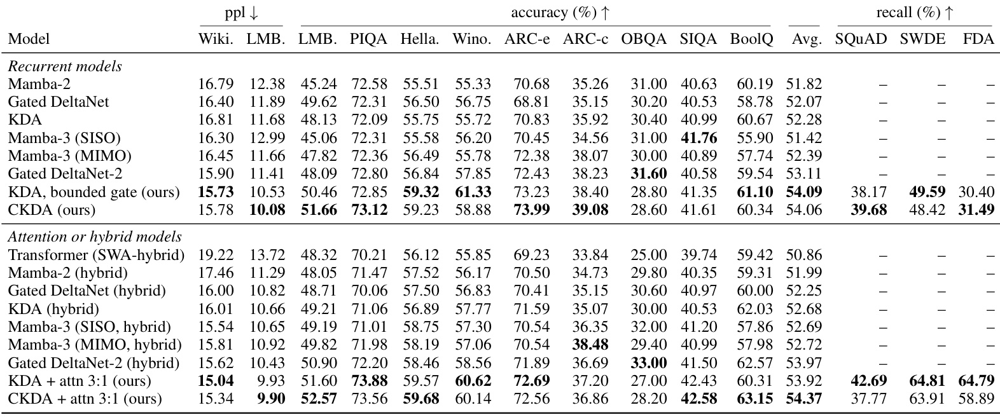
Table 2 的前两列是困惑度，越低越好，中间是常识与理解任务准确率，最后三列是召回类指标。首先应比较标明“ours”的同配方递归 KDA 与 CKDA：平均准确率分别为 54.09% 和 54.06%，后者并没有全面超过前者。CKDA 的 LAMBADA 困惑度从 10.53 降至 10.08、对应准确率从 50.46 提高到 51.66，但 WikiText 困惑度略差，WinoGrande 与若干召回指标也各有胜负。这个结果支持在增强几何表达能力后维持语言模型综合质量，不支持宣称扩展门能无条件提高每项能力。
混合模型中，CKDA 平均准确率为 54.37%，KDA 为 53.92%，差距为零点四五个百分点；但召回不是同方向变化，例如 FDA 从 KDA 的 64.79 降到 CKDA 的 58.89。表内存在由其他论文报告的模型，它们与作者控制组的训练和注意力配方并不完全相同：外部混合基线通常是一比一的递归与滑窗注意力，而本文是三比一的完整门控注意力。作者 KDA 又使用安全有界门，所以不能把它与外部旧 KDA 之间的提升全部归给有符号门。若把表中最高一列抽出来做总体排名，很容易把训练配方收益误写成结构收益。
这些对照说明，该工作最强的论据不是语言模型分数大幅领先，而是明确机制增益没有以明显的语言质量崩溃为代价。对于需要尝试新递归架构的团队，这很重要：一个仅能解决合成群词但在真实预训练上失败的模块没有那么容易迁移。另一方面，差距小、任务间权衡明显时，需要多次种子、统一配方、误差区间和完整端到端成本才能判断生产价值。本文没有给出线上服务质量，也未建立旋转使用频率与下游某个任务收益之间的因果对应，所以最稳妥的评价仍是“可用的 KDA 变体，语言结果接近强控制组”。
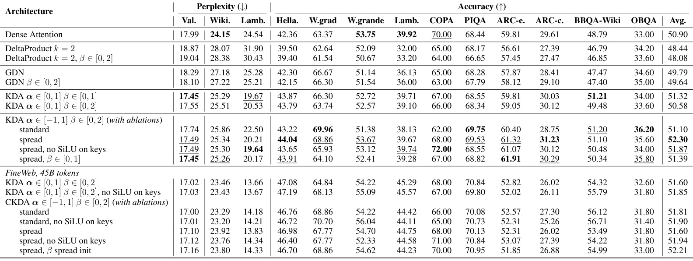
Table 6 将范围、初始化及 SiLU 因素展开，能够帮助读者避免把一个最终配置当作固定定律。上半块是约三亿四千万参数、Nemotron-CC 150 亿（15B）token 训练，标准 KDA 平均准确率 51.32%，完整 CKDA 配合 spread 初始化达到 52.30%，提高零点九八个百分点。可是 CKDA 用 standard 初始化只有 51.10%，不但没有提升，还略低于 KDA；这说明打开参数空间不是自动收益，训练起点决定网络是否有效利用新增区域。与此同时，验证困惑度最小者并不总是下游均分最大者，不能只用一种指标选取结论。
表的下半块换成 FineWeb 的 45B token，因此不能把上下两块同名行直接做数据量受控比较。这里去掉 SiLU 的 KDA 为 51.85%，同时对 gate 和更新率使用 spread 的 CKDA 达到 52.21%，差距仅零点三六个百分点。其他 CKDA 版本落在相近范围内；某些去激活配置改善某个任务，却没有在另一数据块保持相同排序。粗体和下划线的标记范围也只针对上方 Nemotron-CC 行，而不是整个表的全球排名。消融信息显示，初始化、激活、数据和 token 预算之间存在交互，不能提炼成“负门加倍系数必然提升一分”的经验公式。
从复现角度，最应保留的是成组对照而非挑选最佳结果：标准门、只扩展系数、只允许负门、完整扩展，再结合正门初始化与正负混合初始化。这样才能区分几何可表达性、优化可达性以及一般预训练质量之间的差异。表中参数匹配通过调整 SwiGLU 中间宽度实现，增加投影的架构会相应减少前馈容量，因此它是在近似固定总参数预算下比较整体网络，而不是每个子模块完全一样。论文已提供详细配置，但本次只核验原文与开源可访问性，尚不能声称这些小差距已被独立复现。
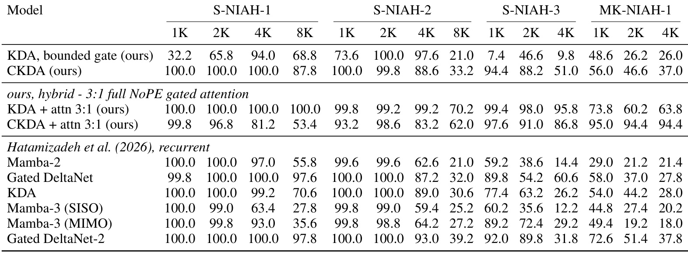
Table 7 给出一组不能被平均准确率替代的长上下文检索结果。列先按单针与多键检索任务分组，再按一千、两千、四千及部分八千 token 长度细分，每格五百个样本。纯递归 CKDA 在 S-NIAH-1 的一千到四千均为 100%，八千为 87.8%；作者 KDA 对照相应为 32.2、65.8、94.0、68.8。这个差距提示有符号范围可能改善某些内容保持或检索路径，但作者也明确写道，为什么其未扩展门 KDA 在这里特别差仍需研究。因此不能把异常弱的控制组结果当作所有 KDA 必然存在的缺陷。
更细读会发现收益并非覆盖所有格子。S-NIAH-2 四千长度上，递归 KDA 为 97.6，CKDA 为 88.6；在另一些任务又相反。混合模型的多键任务上 CKDA 明显较好，但单针若干格子反而低于 KDA，说明完整注意力、递归状态与门范围的关系不能用单一记忆容量解释。表里混合行的测试长度只到注意力训练覆盖的四千；因为相邻纯递归行有八千列，紧排的空缺很容易被误读成混合八千结果。应按列组实际填充值判断，而不是跨空白自行对齐。
这一表格也说明“长上下文”至少需要拆成两类目标：合成周期或群词任务要求稳定执行状态更新，针检索要求从干扰内容中保留并提取具体信息。CKDA 的旋转机制对前者有明确几何解释，对后者的作用仍较间接。生产应用若依赖精确历史事实，应该额外评估多针、干扰密度、不同位置和真实上下文，而不是由 S₃ 外推成功直接推断能回忆所有 token。表内召回高低的结构差异还提示，对混合模型进行工程选择时，应同时检查平均语言能力和关键检索子任务，避免总分接近掩盖实际业务依赖的能力退化。
3.4 规模与实际用法：扩展范围被用到了，但收益原因未完全解释
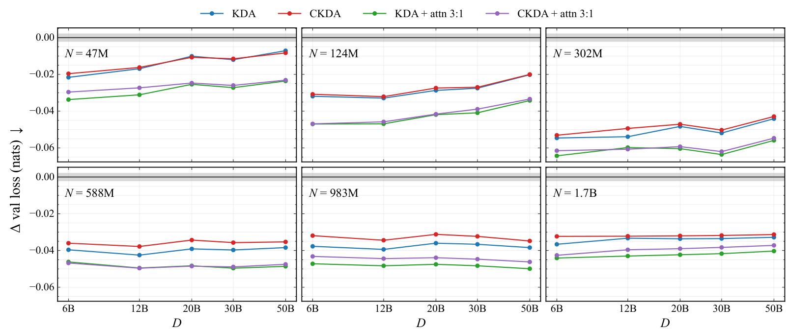
Figure 9 每个面板固定一个参数规模，从 47M 逐步扩展至 1.7B，横轴是训练 token 数，纵轴是相对于带 QK-Norm 的 Transformer 控制组的验证损失差，单位为 nats。零线意味着相等，负值意味着损失更低，灰色区域提示近似噪声水平。纯递归 KDA 与 CKDA 的曲线大多紧邻，混合版本通常进一步降低损失。它说明在作者实际覆盖的规模与数据范围内，递归路线没有表现出“规模变大必然输给 Transformer”的交叉趋势，但不能据此外推无限规模下的最优架构。
读图时还应区分两种比较：同一个面板随 token 增加是过训练比例变化，不同面板之间则同时改变模型容量。小模型在数据增加后相对优势有缩小迹象，而较大模型在所测区间仍维持负差值。作者在附录拟合了参数与数据的缩放规律，并对最大模型数据点做留出检验，但拟合仍依赖所覆盖的计算预算，未覆盖更高一阶的数据规模。有限网格中没有观察到交叉点，与数学上证明永不交叉有本质差别。灰带附近的小变化也不宜赋予过多架构解释。
这张图对 CKDA 最稳妥的支持是“新增符号自由度没有破坏 KDA 的已有缩放表现”，而不是“CKDA 的缩放斜率显著优于 KDA”。实际上，部分规模上 KDA 曲线更低，混合曲线的差距也很小。一个合理后续实验是固定预训练配方、扩大相同模型的 token 预算，并重复关键点，而非继续增加小模型网格数量。工程上是否值得采用还取决于完整训练耗时、显存以及下游任务偏好，验证损失仅提供其中一维。本文把规模图与机制图并列，是在证明候选架构能正常预训练，而不是已经揭示所有性能提升的微观原因。
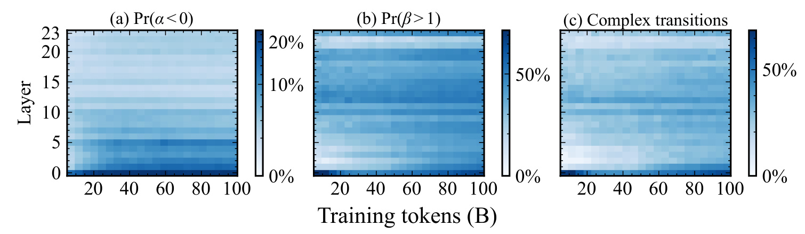
Figure 10 跟踪标准初始化的 1.3B 纯递归 CKDA，横轴为已训练 token，纵轴为层编号。三个面板分别统计负门比例、更新率大于一的比例、含复特征值转移的比例，颜色采用平方根缩放，因此不同深浅不能直接按线性差值估计。虽然门最初接近正一，训练早期的浅层仍逐渐出现负门；系数大于一后来在更广泛层中出现，而复杂谱主要集中在前两层。这与理论需要两种扩展共同工作相吻合，也证明模型没有完全把新增参数范围闲置。
但三张热图不是同一个统计量，不能把负门比例与复谱比例相等。出现某个负通道只是必要因素之一，key 必须在不同符号坐标上有合适分量，系数也要进入有效范围。更深层出现大于一的系数但复谱较少，并不矛盾，可能只是将范围用于反射或其他实谱操作。图是在 FineWeb-Edu 验证切分、四千零九十六长度上计算，所显示的是特定输入分布的平均用法，而不是模型所有可能输入的全局属性。附录另外展示混合模型和最终检查点层级统计，说明作者对这条现象做了延伸观察。
这类使用统计仍不能回答“语言模型具体用旋转保存了什么”。它没有将特征值角度对应到语法周期、实体指代或位置计数，也没有干预相关层后测量任务退化。因而论文将机制分析留作后续是合理的。对研究者，这张图提供很有操作性的诊断：若复现模型完全不进入负门范围，可能训练配方或实现限制了自由度；若大量进入负门却没有语言收益，也不能立即判定实现错误，需要考虑模型是否将自由度用于其他功能。观察到新机制被激活是解释收益的起点，并不是收益归因的终点。
3.5 算子效率：保留大部分吞吐，不是整体加速
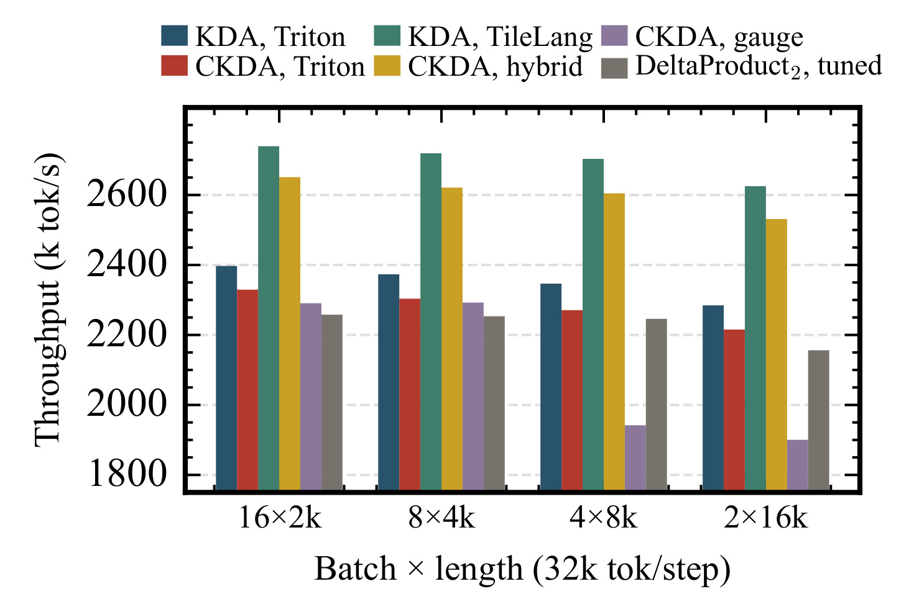
Figure 5 测量 H100、BF16、十六个头、key/value 维度均为一百二十八时的前向加反向内核吞吐。每步固定三万二千 token，横轴把同样工作量分成不同批量与序列长度组合，纵轴是每秒千 token。Triton 与 TileLang 的 KDA 是不同后端基线，CKDA 也分别展示纯 PyTorch gauge、Triton 融合和混合后端，因此应该按对应实现比较。融合版本保留约 96–97% 的 KDA 吞吐，意味着为新增符号处理付出少量速度损失，不是比原 KDA 快百分之九十六。
图中 gauge 版本在较长序列时下降更明显，说明数学等价的坐标变换若以额外张量操作实现，会产生不能忽略的访存或调度开销。把符号翻转融入归一化和反向传播可以减少这种额外传递，这是作者真正的系统实现贡献之一。即便如此，测量覆盖的仍是特定形状的递归计算核，未包括完整模型的词嵌入、前馈层、优化器、分布式通信、数据加载和服务端调度。既不能把核吞吐保留率直接等同于整训练速度，也不能用它保证任意 batch 或长上下文在线解码延迟只损失几个百分点。
DeltaProduct₂ 的柱子也值得单独读。尽管每个 token 使用两次更新，它使用的是恒等加秩一结构，没有 CKDA 的逐通道门计算；测量还包含它额外的 value 输入。作者因此明确不宣称 CKDA 对 DeltaProduct₂ 存在固有效率优势。相比把更新次数当作成本代理，实测说明矩阵结构、后端融合和输入处理可以改变最终排名。对部署决策，本文提供的是“在现有高效 KDA 内核附近获得更强表达能力”的可行性证据；若真实目标是替换另一个递归架构，应按目标硬件和序列分布重新测量全链路，而不是只依据秩或一次/两次更新作结论。
4. 总结
4.1 我的判断
Complex KDA 最扎实的贡献，是把一个看似小的门范围修改连接到完整的矩阵结构、状态追踪定理和训练中的可观测机制。它不是另起一套显式复数架构，而是在保留实数对角加秩一更新时，让逐通道门承担坐标反射。这样理解之后，“为什么标量负门不够”“为什么只放大更新率不够”“为什么两种扩展一起有效”都有明确答案。论文在 S₃ 与周期波形上给出较强实验对应，在 S₄、A₅ 和语言模型中又留下了实际限制，所以适合作为线性递归表达能力与可学性之间关系的研究材料。
对于当前工程实践，我会把它看成值得在同配方条件下尝试的 KDA 变体，而不是马上替换全部注意力或递归主干的依据。同配方语言均分接近、部分检索任务改善、核吞吐成本较小，形成了可尝试的理由；但收益不是所有指标统一向上，也没有端到端线上数据。若已有 KDA 内核和训练配置，迁移成本可能相对可控，重点是验证符号吸收后的数值等价及反向梯度约定；若团队使用其他主干，单凭理论少一层或少一次更新并不足以估计真实迁移价值。
4.2 局限与复现优先级
第一，表达定理采用精确运算、特定解码器和有限可达等条件，实际低精度状态会发生误差积累。应把理论表达上限与工程可稳定运行长度分别报告，而不是用任何一个代替另一个。第二，标准训练没有学会 A₅，理论初始化实验还改了模型和日程，所以它揭示优化障碍，却没有干净量化初始化的独立贡献。第三，群词只展示最佳种子，音频只用单一种子和固定节奏，训练成功率与跨分布稳健性证据有限。第四，语言模型有跨论文配方差异，同控制组收益又较小，不能把整个主表的所有优势归给门范围。第五，扩展到一般加权自动机需要允许系数超过二，失去此前强调的非扩张条件；把两条结论混合会制造错误的“稳定且通用”宣传。第六，吞吐实验是核级别，不覆盖完整训练、解码缓存和分布式服务成本。
复现应先做三个具体工作。其一，在短小矩阵与真实序列上对比原始有符号递归、符号吸收版本和融合内核，检查前向、梯度和多 chunk 边界是否一致；零门附近的幅值下界与停止梯度最容易被实现差异忽略。其二，重复完整四范围消融，保留所有种子并分别画 S₃/S₄ 长度曲线，同时记录门符号、更新率与谱，确认收益是否来自论文描述的结构而非训练课程差异。其三，在完全一致的预训练配置里对齐 KDA 与 CKDA，评估均分、检索分项、全模型训练耗时和解码延迟，让质量与成本都在相同口径下比较。
4.3 值得继续追问的方向
后续最有价值的问题不是继续罗列更多可表达的群，而是缩小表达与优化的距离。可以在不改变头数和训练日程的条件下比较普通、spread 和理论附近初始化，以识别 A₅ 障碍到底来自 key 的几何排列、门的符号发现还是解码器。其次应对浅层复谱进行因果干预，观察哪些真实语言能力受影响，从而解释 Figure 10 中“机制被使用”与最终任务收益之间的联系。最后，应增加输入扰动、有限精度与极长序列评估，寻找保持相位之后仍然发生错误的模式，这能决定是否需要额外非线性纠错路径或混合注意力。
若把研究迁移到推荐行为序列，应优先选择确有周期或状态切换的受控任务，再逐步加入稀疏行为和兴趣漂移。纯周期保持可能帮助重复访问模式，却也可能放大过时行为，因此需要同时测试遗忘能力和突变适应性。本文没有给出这部分实验，这只是由机制提出的后续研究设计。它最终留下的可靠结论是：对角门的符号可以成为重要几何资源，单次低秩递归的能力边界比仅从更新次数判断更丰富，而是否能把这份资源稳定训练成真实任务收益，仍需要细致的配方与系统验证。